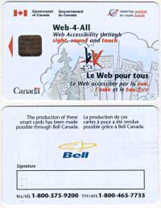

Web-4-All
National Industry Canada Pilot Initiative
What is Web-4-All?
Please note that the Pilot Initiative is now completed and that the following is provided as reference/background information only.
Web-4-All is an innovative technology that enables people with disabilities and low literacy levels, as well as seniors and people unfamiliar with computers, to use the Internet on public access computers. With Web-4-All hardware and software:
- people who are blind or partially sighted and people who do not read
well can have type faces magnified or text read aloud;
- people who have limited dexterity — finding it difficult to
work with a standard keyboard or mouse — can use tools, settings
and displays that are easier to manipulate; and
- people who are not familiar with the Internet can have Web sites
displayed in a clear and consistent way, according to their preferences.
- people who have low literacy levels or are learning English as a second language can have text highlighted as the words are read out.
How does it work?
All Web-4-All users are given a “smart card” similar in size to a debit or credit card, which contains their individual preferences, such as having text read aloud or type faces magnified. Every time they log onto a public access computer, the users simply insert their card into a reader and the computer adjusts to their preferences. Web-4-All is the first technology of its kind capable of automatically loading individual user preferences.
Where can people use Web-4-All?
Currently, Web-4-All is being pilot tested at public Internet access sites in selected communities across Canada. These sites provide people with affordable access to the Internet in places such as community centres, schools, disability and literacy resource centres, drop-in centres and seniors' facilities.
How was Web-4-All developed?
Industry Canada supported the University of Toronto's Assistive Technology Resource Centre (ATRC) to develop the technology. Bell Canada, Hitachi Canada and the Royal Bank of Canada donated “smart card” technology used in the pilot projects across Canada.
Archived Press Releases
- Web-4-All Technology Helps Winnipeg Area
Residents with Special Needs Get On-line:
- Web-4-All Technology Helping South Shore
Residents with Special Needs Get On-line:
- Web-4-All Technology Helping St. John's Area
Residents with Special Needs Get Online:
Community Engagement Guidelines Used for the Pilot Phase
To view the Web-4-All Community Engagement Guidelines please click on the following link:
Community Engagement Guidelines Used for the Pilot Phase
PowerPoint Presentation
Click the following link to play or download a presentation about Web-4-All:
Aug2003W4A_Marketing_Toolkit_El.ppt
(Note: If you do not have Microsoft PowerPoint installed on your computer, you can install the PowerPoint viewer with the following link: PPViewer.exe)
Technical Loans Agreement
To view the Web-4-All Technical Loans Agreement please click on the following link: